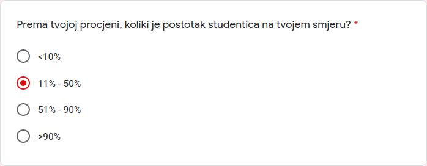
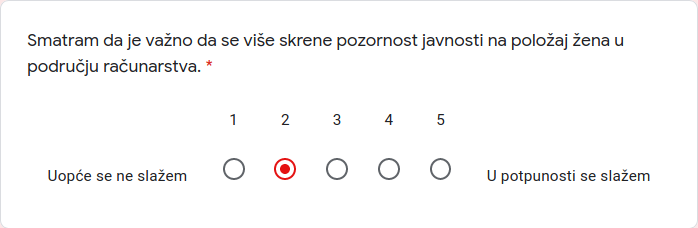
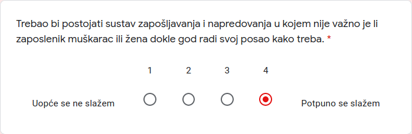
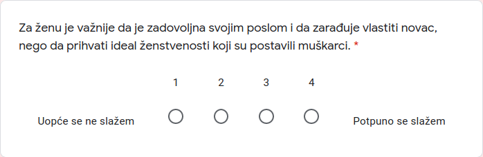
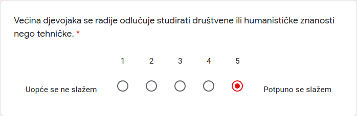
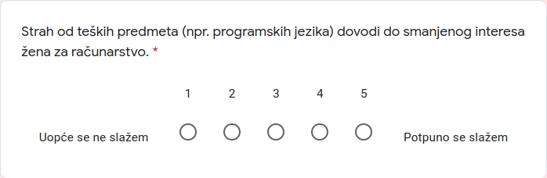
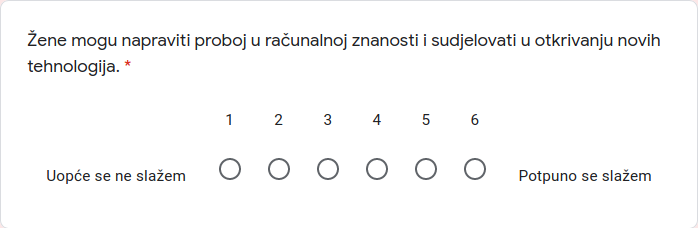
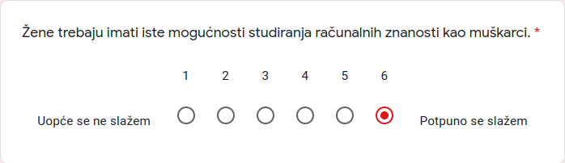

mAca Lukas Mislio sam da pretjeruješ, ali onda sam vidio ovo:
bruh kakva je ovo skala

Prvo ima ovakav sustav:

a onda ovakav:

ovak nešto nije na jednom mjestu nego je pola ankete od 0 do 3 a pola od 0 do 4. Kak že ovo skalirati nemam pojma, samo mislim da je retardirano
A da komentiram i ovu drugu sliku u sekciji iznad, kakvo je ovo sugestivno pitanje lmao
doslovno je mogla pitati “jesi li seksist ili normalna osoba, ocijeni se od 0 do 3” lmao

Kakvo je ovo feminističko pitanje, muškarci su tijekom godina jebali ono što ima dobru sisu i guzicu, ne ono što je bilo ženstveno, a žene su definirale što je ženstveno (muškarci nemaju pojma što je ženstveno, većina straight muških ni ne razmišlja o tome, to dođe prirodno lmao).

preispituje činjenicu, a ne mišljenje

ill-formed question, težina gradiva je subjektivna, prema tome odgovor je duplo mišljenje ali bez informacije misli li stvarno ispitanik da je programiranje teško
okej, mislio sam da je miješanje 2 skale bilo loše, al onda dođe i 3.


a kao nemaju??????????
Finalno, koliko je ovo bilo, 20 (loše postavljenih) pitanja? Kakvu će to sliku dati na relativno malom uzorku, kad anketa izgleda nije napravljena svrhom da se nešto nauči o obradi podataka?